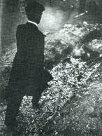

|
Firewalking has been reported all over the world. Giovanni Ianuzzo reviews thirty three scholarly accounts of firewalking worldwide, dating back to 1894. He touches upon various possible explanations for successful firewalking including fraud, calloused feet, skin moisture, physiological explanations related to altered states of consciousness, and psychic ability. His somewhat circular conclusion is "that the phenomena of fire immunity is related to a modification of the human organism to intensive thermal stimuli in altered states of consciousness." A particularly dramatic episode of firewalking in Singapore has been described by anthropologist Ruth Inge Heinze. Eight hundred devotees participated in this ceremony, spending several days and nights praying and fasting, within a Hindu temple. More than a thousand logs were placed into a twenty-foot pit. Heinze, who observed the entire ceremony, noted that two people fell into the pit and had to be rescued by temple attendants. One man died in an hour after taking part in the ceremony. Approximately forty people, or 5% of those participating, received burns. Heinze observed, "IJ could predict whether people would survive the ordeal by looking at their faces before they entered the pit; in particular, doubt appeared on the faces of some white-collar workers, and they got burned, sinking into the coals up to their ankles." Writing in a mainstream professional psychological journal, chemist Meyn Reid Coe, Jr. chronicles his own successful attempts with firewalking and a variety of related behaviors: Touched red-hot iron with my fingers.Psi researcher Larissa Vilenskaya, a Soviet emigre, studied firewalking procedures with American guru Tolly Burkan. Burkan, and one of his students, Anthony Robbins, claim to have taught firewalking to over ten thousand individuals – as of mid-1984. Vilenskaya, herself, has been among those trained by Burkan to instruct seminars in the art of firewalking and has generously written several accounts of her experiences. Doherty reports an experiment by noted physicist Friedbert Karger in the Fiji Islands. Karger, using temperature sensitive paints, determined that a native firewalker stood on a specific rock for seven seconds which had a temperature of 600 degrees Fahrenheit (315 degrees Centigrade). The paint on the man's feet revealed that they had not been hotter than 150 degrees Fahrenheit. Without any preparation, I myself had an
opportunity to participate in a firewalking ritual with a group of Kailas
Shugendo Buddhists in San Francisco under the direction of Dr. Ajari Warwick.
The religious practices of these individuals include daily fire rituals
of several kinds, maintaining an ambulance rescue service (pulling people
out of plane wrecks and fires), as well as mountain climbing – and country-western
music. Unlike many "spiritual groups," the Kailas Shugendo people
make no effort to proselytize. In fact, they actively discourage
would-be converts. They are extremely disciplined, yet they possess
an overflowing humor. It was in one such peak of gaiety that Ajari
invited me to come to a ritual with my camera and tape recorder.
I regarded the invitation as an honor because I knew the group was very
cautious about allowing the public to treat the practices as a circus sideshow.
I did not expect to attend, as I was without transportation at the time
and the ceremony took place on a remote beach. I put the idea out
of my head. However, by a coincidence, a friend with a car appeared
at 7:30 a.m. on he appointed day – and off we went.
The ceremony was modest – simply a six-foot pit of flaming logs that we walked over dozens of times, quite briskly, generally stepping once with each foot. The flames rose up and singed the hair on my legs, although I felt no pain and suffered no burns. I had complete confidence in Ajari who asked that I follow him across the pit. Microphone in hand, I recorded my impressions on tape as we went over the flames. I must admit that I actually felt protected in some way. It was a totally uplifting experience. Later on, some psychic readers mentioned that I was surrounded by a white light. Perhaps they noticed my silly smile. Actually the phenomena of handling or footing hot coals provides a very tricky problem for logical analysis. The first experimental tests of firewalking were conducted by the University of London Council for Psychical Investigation in 1935 under the direction of Harry Price. In his initial report, Price discussed several sessions held with the Indian fakir, Kuda Bux, who also performed acts of blindfolded clairvoyance of questionable authenticity. According to Price, the blindfolds always allowed a line of vision along the side of the nose. His firewalking was more impressive. In nearly a year of advertising for firewalkers with which to conduct experiments, Kuda Bux was the only individual to step forward.  Kuda Bux Firewalking Before a large audience of newsmen and scientists, he walked barefoot across a twelve foot pit of burning coals. During one demonstration it was windy and the surface temperature of the fire was measured at 806 degrees F., while the body of the fire was 2552 degrees Fahrenheit – hot enough to melt steel. Kuda Bux took four steps across the pit and suffered no burns. His feet were carefully inspected both before and after his performance to eliminate the possibility that he could have used chemicals of any sort to protect himself. The entire event was also recorded on film. Kuda Bux claimed that he could convey an immunity to other individuals who followed him across the coals. Unfortunately, this was not the case during the first set of experiments. All other individuals who followed him over the coals suffered minor burns. Human flesh scorches more easily than cotton fabric, and experiments with a wooded shoe covered with calico indicated scorching in less than a second when placed on the hot embers. However, the scientists noticed that no portion of the skin was in contact with the hot embers for as long as half a second. Perhaps, they thought, the art of firewalking merely involved the skill of stepping quickly and properly. A second series of experiments seemed to confirm this opinion. This time the firewalker was another fakir from India, Ahmed Hussain. He showed approximately the same ability as did Kuda Bux. Interestingly enough, the temperature of his feet was found to be 10 degrees Fahrenheit lower after the firewalk than before, indicating a certain amount of autonomic physiological regulation. However, when the length of the trench was increased to twenty feet, Hussain also suffered burns. Furthermore, several amateurs then found that they could walk across the twelve-foot fire trench without suffering burns. These tests led Price to conclude: ...any person with the requisite determination, confidence and steadiness, can walk unharmed over a fire as hot as 800 degrees Centigrade. The experiments proved once and for all that no occult or psychic power, or a specially induced mental state, is necessary in a firewalker.Price's conclusion is supported by the measurements of feet movement. In normal walking, it was found that the time from the contact of the heel, with the floor until the big toe left the floor was 0.65 second. For only 0.05 second was the entire sole of the foot in contact with the floor. During the brisk firewalk contact was even less. Price's argument entirely depends upon this brief contact time. The literature on fire-handling is much more difficult to deal with. Careful measurements such as Price's have not been made, but the observations seem to mitigate against a simple physical interpretation. A description of a fire-test with the nineteenth-century medium, D. D. Home, was written by Lord Adare who later became the Earl of Dunraven: He went to the fire, poked up the coals, and putting his hand in, drew out a hot burning ember, about twice the size of an orange; this he carried about the room, as if to show it to the spirits, and then brought it back to us; we all examined it. He then put it back in the fire and showed us his hands; they were not in the least blackened or scorched, neither did they smell of fire, but on the contrary of a sweet scent which he threw off from his fingers at us across the table. Having apparently spoken to some spirit, he went back to the fire, and with his hand stirred the embers into a flame; then kneeling down, he placed his face right among the burning coals, moving it about as though bathing it in water. Then, getting up, he held his finger for some time in the flame of a candle. Presently, he took the same lump of coal he had previously handled and came over to us, blowing upon it to make it brighter. He then walked slowly around the table, and said, "I want to see which of you will be the best subject. Ah! Adare will be the easiest..." Mr. Jencken held out his hand saying, "Put it into mind." Home said, "No, no, touch it and see." He touched it with the tip of his finger and burnt himself. Home then held it within four or five inches of Mr. Saal's and Mr. Hurt's hands, and they could not endure the heat. He came to me and said, "Now, if you are not afraid, hold out your hand;" I do so, and having made two rapid passes over my hand, he placed the coal in it. I must have held it for half a minute, long enough to have burned my hands fearfully; the coal felt scarcely warm. Home then took it away, laughed, and seemed much pleased. As he was going back to the fireplace, he suddenly turned around and said, "Why, just fancy, some of them think that only one side of the ember was hot." He told me to make a hollow of both of my hands; I did so, and he placed the coal in them, and then put both his on the top of the coal, so that it was completely covered by our four hands, and we held it there for some time. Upon this occasion scarcely any heat at all could be perceived.Sir William Crookes also described a fire-handling incident with Home. Crookes states that he tested, in his laboratory, a fine cambric handkerchief the medium had folded around a piece of red charcoal, then fanned to white heat with his breath without damaging the handkerchief. Crookes concluded that the cloth "had not undergone the slightest chemical preparation which could have rendered it fireproof." A similar fire-test was performed by Jack Schwarz, of Selma, Oregon, before physicians of the Los Angeles County medical and hypnosis associations. After having been examined by the doctors, Schwarz put his hands into a large brazier of burning coals, picked some up, and carried them around the room. Subsequent examination showed no burns or other signs of heat on his hands. A number of observations of similar fire-handling among the "saints" of the Free Pentecostal Holiness Church were reported by Dr. Berthold E. Schwarz. Members of this church, in states of religious ecstasy are well known for handling poisonous snakes, swallowing strychnine, and handling fire. Schwarz witnessed such an incident: Once this saint, when in a relatively calm mood, turned to a coal fire of an hour's duration, picked up a flaming "stone coal" the size of a hen's egg and held it in the palms of his hands for 65 seconds while he walked among the congregation. As a control, the author could not touch a piece of burning charcoal for less than one second without developing a painful blister.Apparently the saints' immunity is related to trance. Schwarz described an incident in which a "brother" applied a coal oil torch to the palm of his hand for several seconds with complete immunity. However, when he noticed that a piece of wick was breaking off, he woke from his trance and suffered a burn. In so far as these reports cannot be explained on the basis of Price's theory of deft and speedy handling, science has yet to arrive at an adequate explanation of the fire-tests. One hint of a theory comes from the notion of Prof. James Clerk Maxwell's imaginary "Sorting Demons" – tiny beings who can stop, strike, push or pull atoms and molecules in such a fashion as to insure there would always be a layer of cool, fresh molecules between the skin and the frenzied, spinning, energetic molecules at red-heat. If he answer is to be found on the molecular or atomic levels, further investigation of the phenomena of fire-handling will certainly expand our knowledge of biophysics. Dr. George Egely of Hungary has developed a mathematical model for calculating the temperature distribution on the human sole during firewalking. His model suggests that one can walk or run, with relative safety on a surface as hot as 400 degrees Centigrade. However, he admits that this model is incomplete as he lacks data on perspiration and other possible cooling mechanisms of the skin that might allow for the possibility of firewalking over materials of even hotter temperatures. No good explanation has yet been offered for this heat resistance. However, if one assumes that psi abilities are of the type that respond to real human needs, the firewalking experience provides a repeatable context for the observation of a response to genuine survival needs at work. It is highly unlikely that such an unusual context could ever be duplicated in a scientific laboratory. Even if motivational and need-related factors could be simulated, such experiments would never (quite properly) withstand the scrutiny of "human subjects research" and "ethics" committees. One study did conduct psychological tests with ninety-eight individuals, participating in firewalking workshops led by Tolly Burkan and Anthony Robbins. Of this group, fifty-two subjects walked over the coals for the first time. Sixty-four percent of these completed the walk successfully, while thirty-six percent received some indication of skin exposure to high temperatures, ranging from slight discoloration of the skin to blisters. Several pretests factors seemed to distinguish
between those who received blisters from the experience and those who did
not. Ironically, the non-blisterers were more generally disposed
to experience anxiety and more willing to attribute great power to others
in their lives (i.e., the seminar leaders). Those who received blisters
were less prone toward anxiety and more willing to assume control for their
own lives. However, a greater shift in attitude was noticed by those
who successfully completed the firewalking experience. They achieved
the same willingness to assume power in their own lives as those who were
blistered had before the experience. One can only assume from this
puzzling data that firewalking is not for everyone.
References . Giovanni Ianuzzo, "‘Fire Immunity': Psi Ability or Psychophysiological Phenomena," Psi Research, 2(4), December 1983, pp. 68-74. . Ruth Inge Heinze, "‘Walking on Flowers' in Singapore," Psi Research, 4(2), June 1985, pp. 46-50. . Meyn Reid Coe, Jr., "Fire Walking and Related Behaviors," The Psychological Record, 7(2), April 1957, p. 107. . Larissa Vilenskaya, "Firewalking: A New Fad, a Scientific Riddle, an Excellent Tool for Healing, Spiritual Growth, and Psychological Development," Psi Research, 3(2), June 1984, pp. 102-18. . J. Doherty, "Hot Feat: Firewalkers of the World," Science Digest, 66, August 1982, pp. 67-71. . Harry Price, "A Report on Two Experimental Firewalks," Bulletin II. London: University of London Council for Psychical Investigation, 1936. . Harry Price, Fifty Years of Psychical Research, op. cit., pp. 250-262. . Earl of Dunraven, Experiences in Spiritualism with D. D. Home. Glasgow: Robert Maclehose and Company, 1924. Introduction by Sir Oliver Lodge. . William Crookes, "Notes of Seances with D. D. Home," Proceedings of the Society for Psychical Research, 6, 1889-1890. . Elmer Green and Alyce Green, "The Ins and Outs of Mind-Body Energy," Science Year 1974, World Book Science Annual. Chicago: Field Enterprises Educational Company, 1973, p. 146. . Berthold E. Schwarz, "Ordeal by Serpents, Fire and Strychnine," Psychiatric Quarterly, 24, July 1960, pp. 405-29. . George Egely, "Why Have I Failed With Calculations," Psi Research, 3(2), June 1984, pp. 94-101. . Julian Blake, "Attribution of Power and
the Transformation of Fear: An Empirical Study of Firewalking," Psi
Research, 4(2), June 1985, pp. 62-88.
|